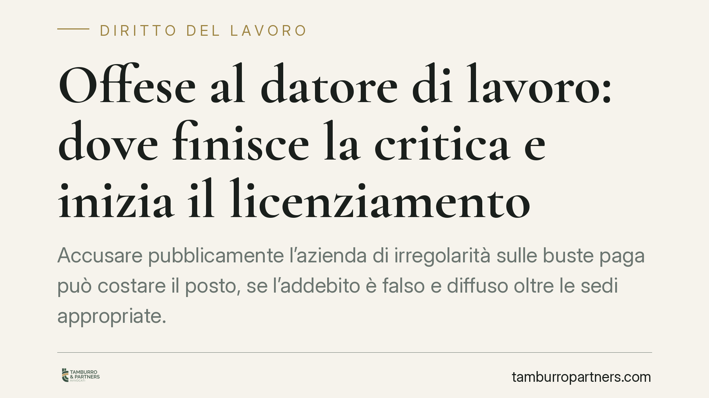

Offese al datore di lavoro: dove finisce la critica e inizia il licenziamento
Accusare pubblicamente l'azienda di irregolarità sulle buste paga può costare il posto, se l'addebito è falso e diffuso oltre le sedi appropriate. Il diritto di critica del lavoratore esiste, ma incontra limiti precisi. Capire dove passa il confine tra dissenso legittimo, segnalazione protetta e condotta diffamatoria è decisivo, perché l'esito disciplinare cambia radicalmente a seconda della qualificazione.

Il fatto
Una recente pronuncia del Tribunale di Roma ha confermato il licenziamento per giusta causa di una dipendente che aveva accusato pubblicamente e falsamente il datore di lavoro di operare furti sulle buste paga.
Una precisazione doverosa. Gli estremi esatti della decisione (numero e anno) vanno verificati sul dispositivo ufficiale prima di qualunque uso giudiziale o citazionale: trattiamo il riferimento con cautela e ragioniamo sui principi, che sono consolidati a prescindere dalla singola sentenza.
Il punto giuridico resta quello: il diritto del lavoratore di criticare l'azienda non è illimitato, e il suo superamento può integrare giusta causa di recesso.
Inquadramento normativo
La giusta causa di licenziamento è prevista dall'art. 2119 c.c.: è la condotta così grave da non consentire la prosecuzione, nemmeno provvisoria, del rapporto. Non si legge però in modo isolato. Va coordinata con l'art. 2106 c.c., che impone la proporzionalità tra infrazione e sanzione, e con la tipizzazione del CCNL applicabile, che spesso elenca le condotte punibili con il recesso. La procedura disciplinare segue l'art. 7 dello Statuto dei Lavoratori (L. 300/1970): contestazione scritta, termine a difesa, sanzione motivata.
Il diritto di critica del lavoratore trova fondamento nella libertà di manifestazione del pensiero (art. 21 Cost.), ma la giurisprudenza lo subordina a tre limiti: continenza sostanziale (i fatti riferiti devono essere veri o almeno seriamente verosimili), continenza formale (il linguaggio non deve trascendere in gratuità offensiva) e pertinenza (la critica deve riguardare questioni di interesse rilevante, non attacchi personali fini a se stessi). Il superamento anche di uno solo di questi parametri espone a responsabilità disciplinare.
Perché la condotta è stata ritenuta illecita
Nel caso in esame cede anzitutto la continenza sostanziale: l'accusa di furto era falsa. Un addebito di rilievo penale rivolto all'azienda, privo di riscontro, non è critica ma imputazione diffamatoria.
Pesa poi la risonanza esterna. La diffusione pubblica dell'accusa non è un dettaglio: incide direttamente sul giudizio di proporzionalità. Un conto è sollevare la questione in sede sindacale o presentare un esposto all'Ispettorato del Lavoro, dove la contestazione resta in un circuito istituzionale e verificabile. Altro conto è diffondere l'addebito sui social o in contesti aperti, dove il danno reputazionale si amplifica e diventa irreversibile. A parità di contenuto, il canale e l'ampiezza della platea spostano l'ago della bilancia nel giudizio di gravità.
Critica diffamatoria o segnalazione protetta?
Qui si innesta una distinzione spesso trascurata. Una segnalazione di irregolarità retributive potrebbe, in astratto, ricadere nella disciplina del whistleblowing (D.Lgs. 24/2023), che protegge chi segnala violazioni di cui sia venuto a conoscenza in ambito lavorativo.
La tutela, però, non è automatica. Scatta quando la segnalazione avviene attraverso i canali previsti (interni, esterni all'ANAC o, a condizioni stringenti, divulgazione pubblica) e quando il segnalante ha fondato motivo di ritenere veritiere le informazioni. Non copre invece chi divulga accuse false, diffuse fuori dai canali e con intento denigratorio. In sintesi: la segnalazione circostanziata di un illecito è protetta; l'imputazione falsa e pubblica non lo è. È proprio su questo crinale che si decide l'esito.
Implicazioni pratiche
Per il lavoratore: il dissenso è legittimo, ma le modalità contano quanto il merito. Un'accusa infondata e diffusa pubblicamente può costare il posto senza preavviso.
Per il datore di lavoro: la contestazione va costruita con rigore procedurale ex art. 7 Statuto e la sanzione deve reggere il vaglio di proporzionalità, specie se il CCNL prevede condotte tipizzate meno gravi. Un recesso sproporzionato resta impugnabile.
Cosa fare in concreto
- Segnala attraverso i canali corretti: ufficio del personale, rappresentanze sindacali, Ispettorato Territoriale del Lavoro. Evita la diffusione pubblica indiscriminata.
- Verifica i fatti prima di parlare: raccogli documentazione (buste paga, cedolini, comunicazioni) a sostegno di qualunque contestazione.
- Valuta la via del whistleblowing quando l'oggetto è una violazione normativa effettiva: i canali dedicati offrono protezione che la critica pubblica non garantisce.
- Lato azienda, rispetta la procedura disciplinare: contestazione tempestiva e specifica, termine a difesa, motivazione della sanzione.
- È opportuna una valutazione preventiva della qualificazione giuridica della condotta prima di agire, in entrambe le direzioni.
Disclaimer
Contributo informativo a cura di Tamburro & Partners - Avv. Giuseppe Tamburro. Non costituisce parere legale.
Ogni storia di lavoro ha i suoi tempi.
Se gestisci HR e vuoi un confronto su contenzioso, ispezioni o licenziamenti, scrivi allo studio. Ti rispondiamo entro un giorno lavorativo.